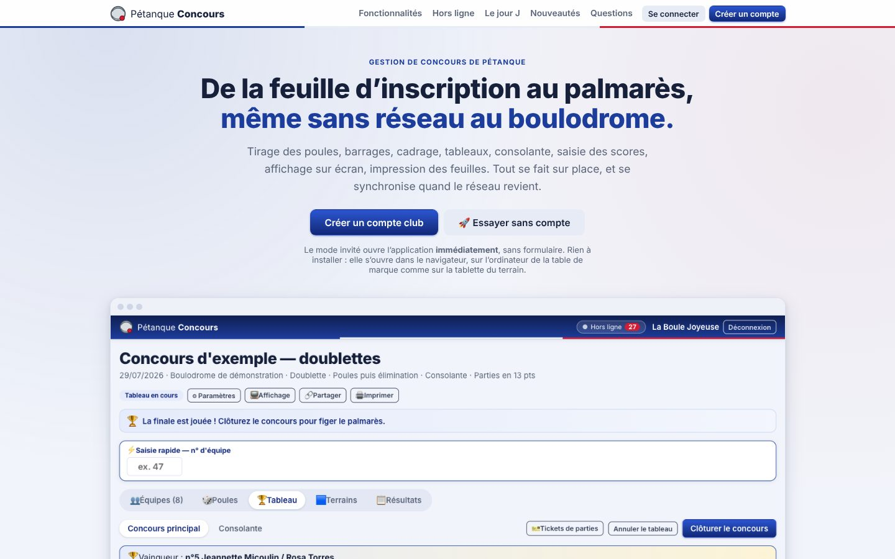
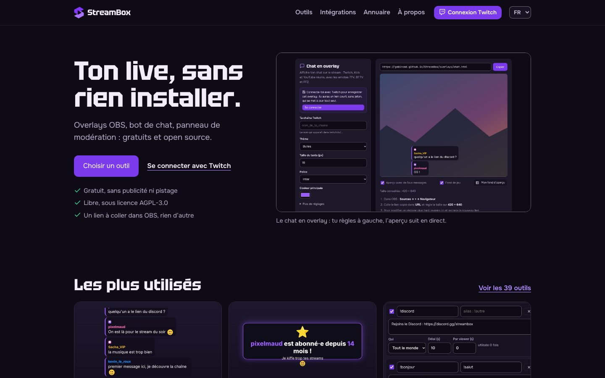
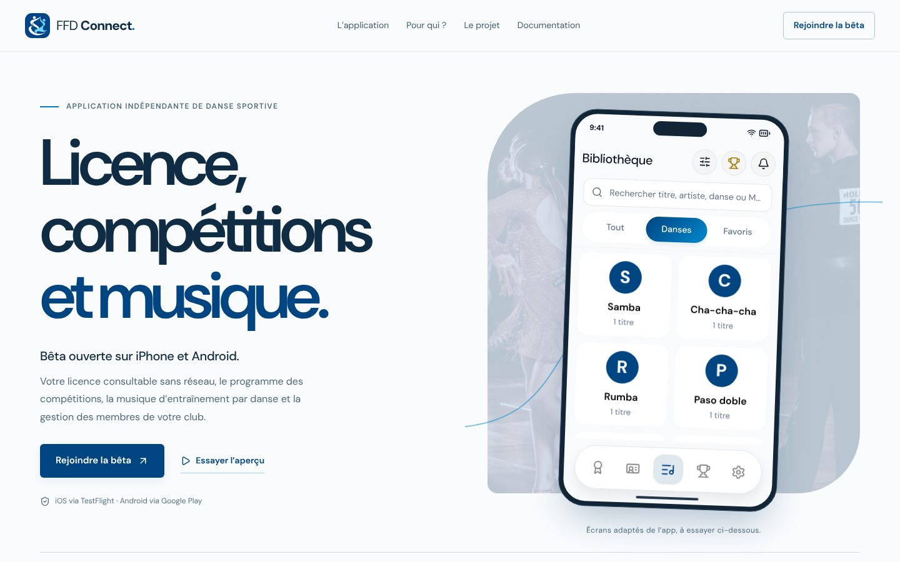

Je construis, je sécurise, j’auto-héberge.
Développeur et DevSecOps : du code, un homelab, des projets faits maison.
Qu’est-ce que je construis ?
-
Pétanque Concours
Concours de pétanque en SaaS multi-clubs, même sans réseau.
-
StreamBox
Boîte à outils open source pour streamers, en overlays OBS.
-
FFD Connect
Danse sportive sur iPhone et Android, en bêta ouverte. Non affiliée à la Fédération Française de Danse.
-
Documentation Homelab
Le journal de bord public de mon homelab.
-
Ecole SAAS
Gestion d’école de danse.
Dépôt privé
Et sans réseau au boulodrome ?
Tirages, poules, tableaux et scores fonctionnent hors ligne, puis se synchronisent.



Qui suis-je ?
Ingénieur du numérique spécialisé en cybersécurité, diplômé d’une formation labellisée SecNumEdu par l’ANSSI, basé en France.
Avec quels outils ?
Sécurité et DevSecOps
Authelia, CrowdSec, Fail2ban, Vaultwarden, SOPS + age, YubiKey, Trivy, Gitleaks, CodeQL, Renovate, Restic.
Infra et homelab
Proxmox, Docker, Debian, Raspberry Pi, ZimaBoard, Traefik, Caddy, Tailscale, Cloudflare, AdGuard Home, Terraform, Ansible, Forgejo, n8n.
Web et apps
React, Vite, PWA, Node.js, Fastify, Bun, Vitest, Docusaurus, Cloudflare Workers, PostgreSQL, Redis.
Langages
TypeScript, JavaScript, HTML, CSS, Bash.
Observabilité et CI/CD
Grafana, Prometheus, Loki, GitHub Actions, Git.
Comment je travaille ?
-
DevSecOps
La sécurité dès le pipeline, pas à la fin.
-
Homelab
ZimaBoard, Raspberry Pi 4, Docker.
-
Touche-à-tout
TypeScript, JavaScript ou Bash, selon le projet.
-
Documentation
Sans doc, un projet se refait.